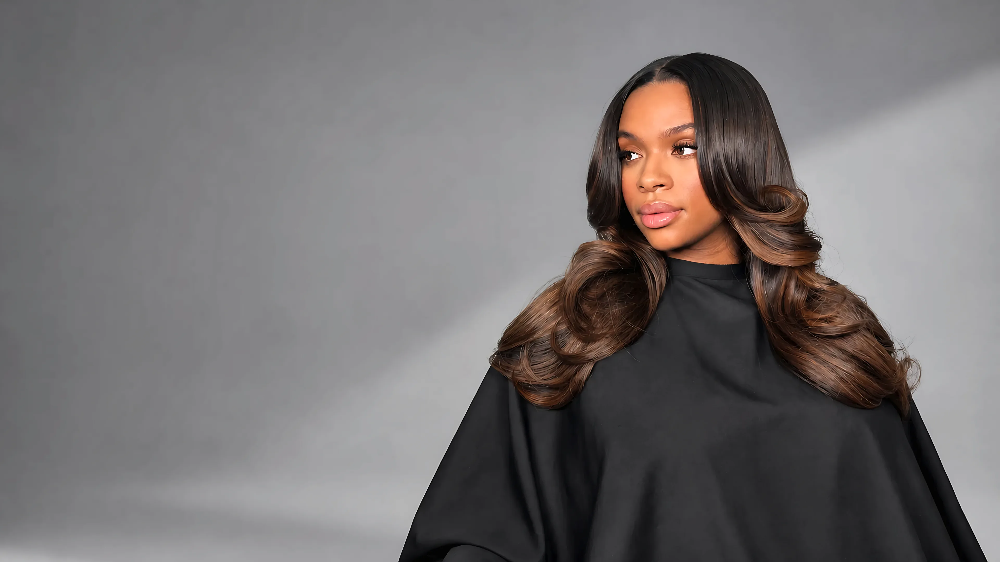
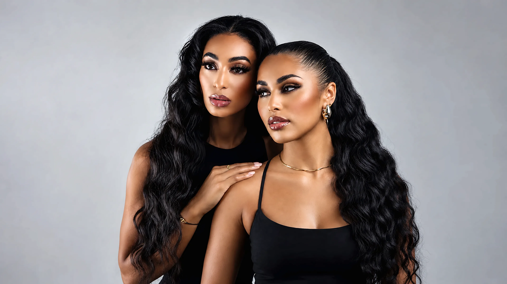
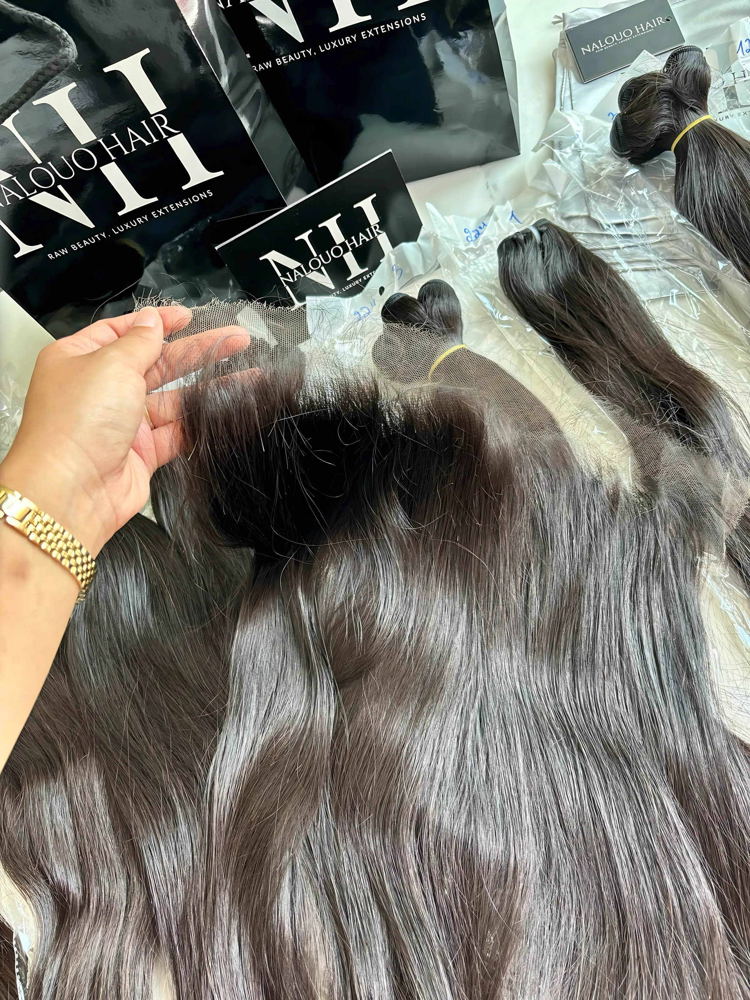

À propos
Depuis plus de trente ans
Nous sélectionnons des cheveux bruts pour celles qui exigent le meilleur.
Nalouo Hair est une maison bruxelloise spécialisée dans les extensions en cheveux bruts et les perruques sur mesure. Nous recevons nos clientes sur rendez-vous dans notre showroom de Jette, pour les conseiller, leur faire toucher les mèches et trouver avec elles la texture et la longueur justes.

Notre histoire
Nalouo Hair est née d'un duo mère-fille. Notre maison repose sur plus de trente ans d'expérience dans l'industrie des extensions capillaires, transmise d'une génération à l'autre.
Plus qu'une marque, Nalouo est une célébration de l'individualité et de la confiance.

Notre savoir-faire
Nos extensions de cheveux bruts indiens viennent directement des temples ; nos cheveux vietnamiens sont choisis pour leur finesse. En collaborant avec les communautés locales, nous garantissons des produits naturels, luxueux et un approvisionnement respectueux.
Non traitées, les mèches gardent leur couleur et leur texture d'origine, et se colorent jusqu'au blond 613. Nos perruques sont montées à la main, sur mesure.
Approvisionnement éthique
Des cheveux issus des temples indiens, en collaboration avec les communautés locales.
Contrôle qualité
Chaque mèche est vérifiée pour rester douce, brillante et sans nœuds.
Conseil personnalisé
La consultation capillaire est offerte, au showroom et sur rendez-vous.
« Trente ans de savoir-faire, transmis d'une mère à sa fille. »

Rencontrons-nous
Avenue van Beesen 23, 1090 Jette. Prenez rendez-vous ou contactez-nous : nous vous recevons pour une consultation offerte.